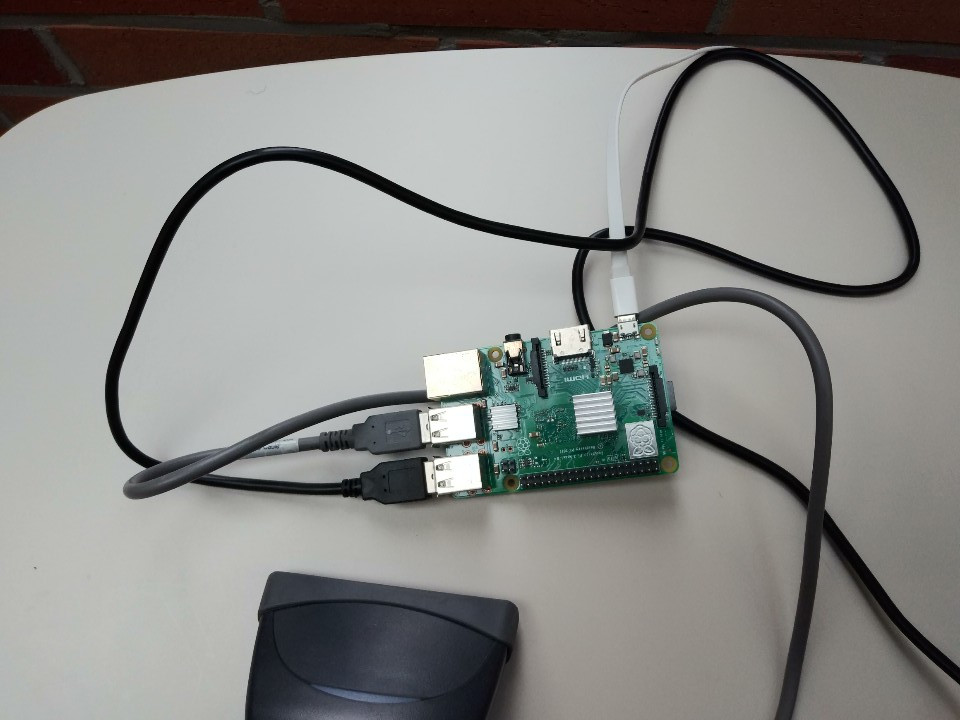
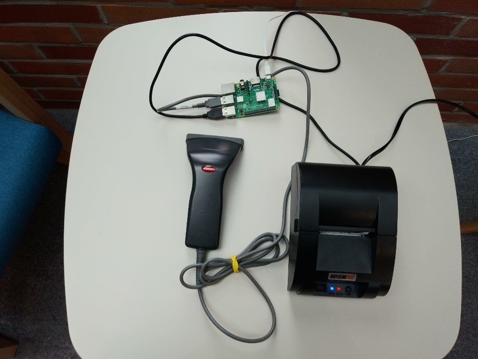

Four months before the Summer break of my junior year, I began working on a project to simplify the school’s late pass procedure with another member from the Computer Programming club in my school. Initially, when a student came late to school, he or she had to come by the high school office to receive a late pass, then return to class. With the late pass project, we wanted to program a printer in the school so that when a student scans their student id card on the printer, the printer prints out the late pass, and sends an email to the high school office and the teacher that notifies the student’s arrival. We quickly began working on the project. The compiled list of student names and their corresponding id numbers were used to identify the student when the student scans their id card on the printer. Using this as a basis, we made two different codes: one that sends an email to the high school office and the teacher, and one that prints the late pass out. With the completion of this project, I made the entire late pass system much more time efficient.

